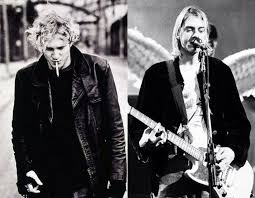

Nirvana
O Nirvana foi uma banda de rock norte-americana que revolucionou a música nos anos 90. Com Kurt Cobain no vocal e guitarra, Krist Novoselic no baixo e Dave Grohl na bateria, o trio de Seattle liderou o movimento grunge, um som caracterizado por guitarras distorcidas, letras introspectivas e uma atitude rebelde. Álbuns como "Nevermind" e hits como "Smells Like Teen Spirit" os catapultararam para a fama mundial, mas a morte trágica de Cobain em 1994 marcou o fim prematuro da banda, que deixou um legado duradouro na história do rock.